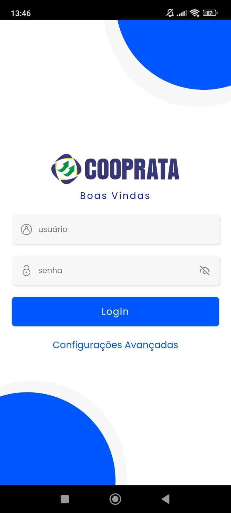
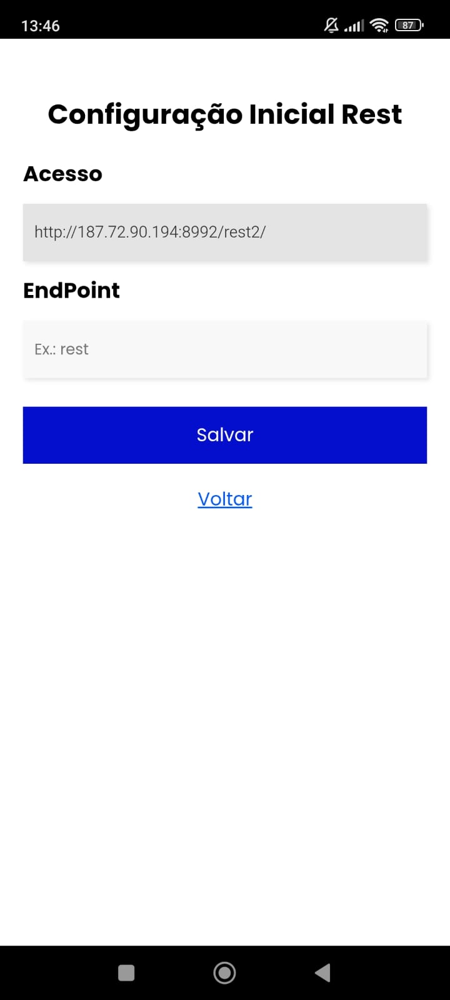
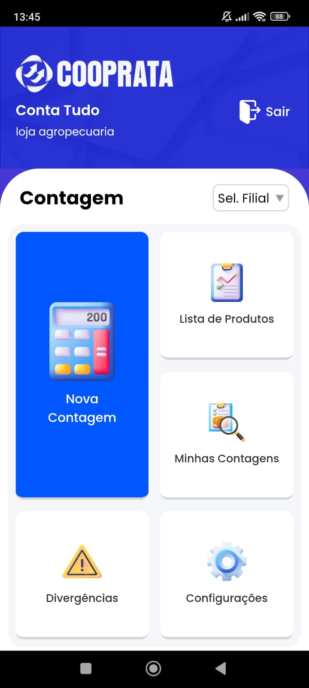
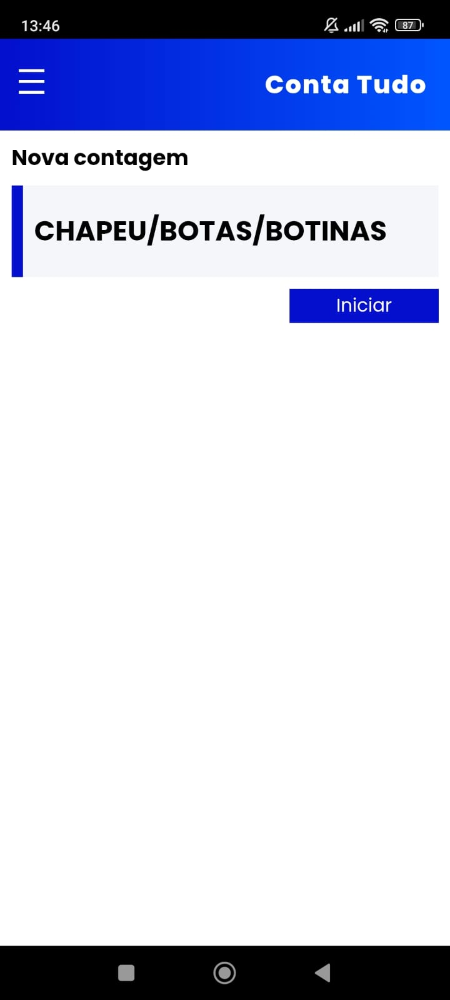
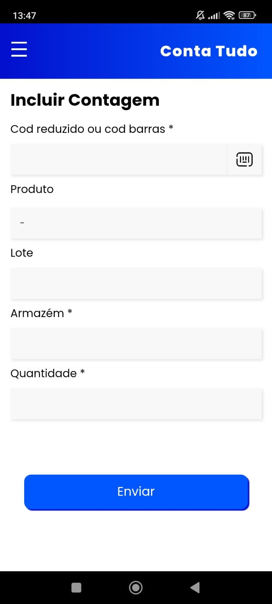
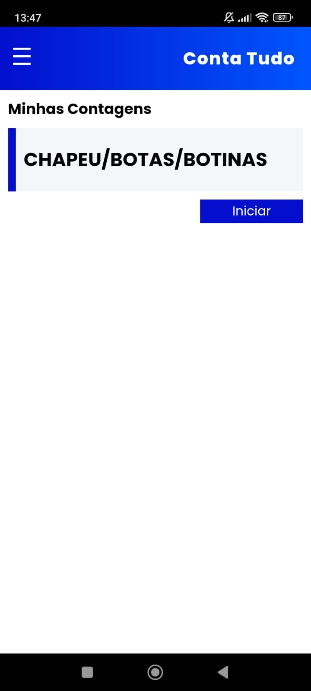
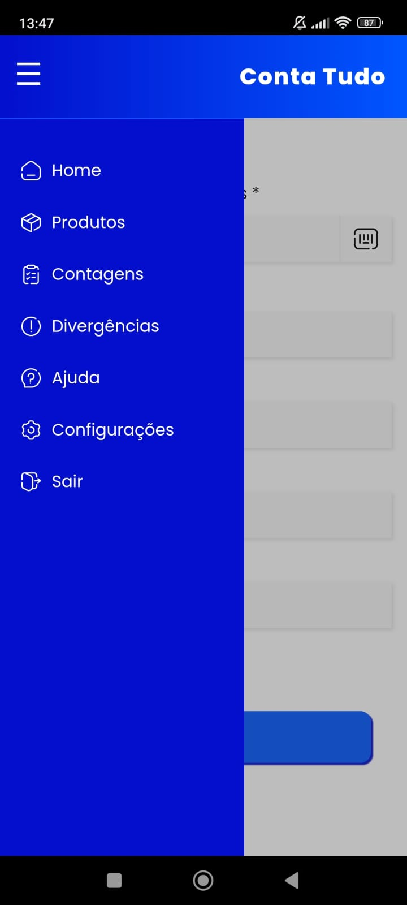
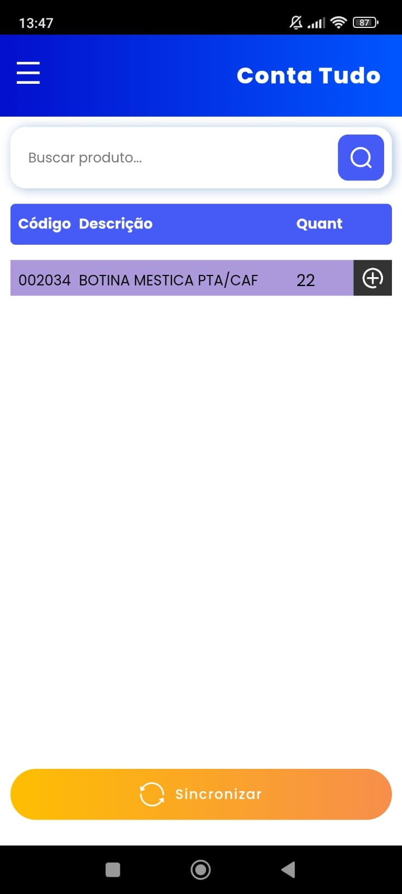

- 
- 
- 
- 
- 
- 
- 
- 
Descrição
O App automatiza o processo de inventário, permitindo usar a câmera do celular como leitor de código de barras. As principais funcionalidades incluem contagem por código de barras ou manualmente, contagem por lote, importação e exportação de dados, e integração com TOTVs Protheus. Os benefícios incluem, otimização de tempo, maior organização e controle das mercadorias.
Detalhes do Arquivo
Nome do arquivo: contatudo.apk
MIME: download/contatudo.apk
Link direto: download/contatudo.apk
Data do Apk: 05-12-2025
Instruções rápidas
- Permitir instalações de fontes desconhecidas (Configurações → Segurança).
- Instale usando o gerenciador de arquivos ou diretamente pelo navegador após o download.